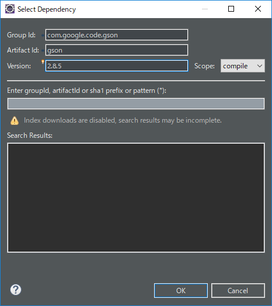

[Java] Jsonタイプのデータを使う方法(Gsonライブラリ)
こんにちは。明月です。
この投稿はJavaでJsonタイプのデータを使う方法に関する説明です。
Jsonデータは「キー:値」になっているデータオブジェクトで人間が読めるテキスト形式の開放型標準フォーマットということです。
JavaでデータオブジェクトをJsonタイプに変換するためにはGoogleで提供するGsonのライブラリを使います。
まず、MavenでGsonを登録してライブラリを連結しましょう。
Reference - https://mvnrepository.com/artifact/com.google.code.gson/gson
maven repositoryに接続してGsonの最新Maven情報を読み込みます。
私はEclipseを利用するのでEclipseのpom.xmlに登録します。


<!-- https://mvnrepository.com/artifact/com.google.code.gson/gson -->
<dependency>
<groupId>com.google.code.gson</groupId>
<artifactId>gson</artifactId>
<version>2.8.6</version>
</dependency>
登録した後、maven updateをしてライブラリを連結します。
そしてテストクラスを作成して試してみましょう。
import com.google.gson.Gson;
import com.google.gson.annotations.SerializedName;
class Example {
// Jsonタイプに変換するようなクラス
class JsonExample {
// jsonキー名に設定する。(もし、このアノテーションが設定なければ変数名がキー名になる。)
@SerializedName("Data1")
private int data1;
// jsonキー名
@SerializedName("Data2")
private String data2;
// data1のgetterプロパティ
public int getData1() {
return data1;
}
// data1のsetterプロパティ
public void setData1(int data1) {
this.data1 = data1;
}
// data2のgetterプロパティ
public String getData2() {
return data2;
}
// data2のsetterプロパティ
public void setData2(String data2) {
this.data2 = data2;
}
}
// 実行関数
public static void main(String[] args) {
// Jsonタイプのデータ
String json = "{ \"Data1\": 1, \"Data2\":\"TEST\" }";
// Jsonタイプのstring値をJsonExmpleタイプに変換
Gson gson = new Gson();
// Jsonタイプをクラスに変換する。キー名と変数名やアノテーション(SerializedName)と一致することでデータが格納
JsonExample obj = gson.fromJson(json, JsonExample.class);
// 結果は1
System.out.println(obj.getData1());
// 結果はTEST
System.out.println(obj.getData2());
// data1は「10」に格納
obj.setData1(10);
// data2は「Hello world」に格納
obj.setData2("Hello world");
// インスタンスデータをjsonタイプに変換する。
json = gson.toJson(obj);
// 結果値は {"Data1":10,"Data2":"Hello world"}
System.out.println(json);
}
}
以前にシリアライズに関して説明したことがあります。
link - [Java] シリアライズ(直列化: Serializable)
シリアライズとかJsonタイプに変換するのはデータをStringタイプに変換することができることです。
結果は違いますが、仕様によって各良い点があるし悪い点があるでしょう。
シリアライズはクラスのインスタンスをバイナリ化することなので、見えない変数(private)までデータが変換します。でも人間が読みにくいデータ構造に変換します。
Jsonの場合はプロパティがないデータ(getterがない変数)ならjsonタイプに変換することは限界があります。でも人間が読みやすいテキストテキストに変換します。意味はデータ構造の直接に修正ができることです。
プロジェクトの仕様によってシリアライズかJsonタイプかに選択して使いましょう。
ここまでJavaでJsonタイプのデータを使う方法に関する説明でした。
ご不明なところや間違いところがあればコメントしてください。
- [Java] サーブレット(Servlet)の環境でファイルアップロード(プログレスバーでファイルアップロード状態を表示する方法)する方法2020/03/24 00:48:21
- [Java] Spring環境でファイルアップロード(プログレスバーでファイルアップロード状態を表示する方法)する方法2020/03/22 23:15:12
- [Java] FTPに接続してファイルをダウンロード、アップロードする方法(FTPClient)2020/03/20 02:44:36
- [Java] JSPのSpring環境でschedulerのcronを使う方法2020/03/18 00:24:32
- [Java] POIを利用してExcelを扱う方法2020/03/17 01:48:00
- [Java] PDFを出力する方法(itextpdf)2020/03/13 00:47:31
- [Java] ログライブラリ(log4j)を使う方法2020/03/12 00:54:39
- [Java] Jsonタイプのデータを使う方法(Gsonライブラリ)2020/03/11 00:30:15
- [Java] Base64をエンコード、デコードする方法2020/03/09 10:24:01
- [Java] cmdコマンドを実行するための方法2020/03/06 18:01:10
- [Java] メール(javax.mail)を発送する方法2020/03/05 20:07:49
- [Java] クラス複製(Clonable, Reflection)2020/03/05 00:03:19
- [Java] シリアライズ(直列化: Serializable)2020/03/03 00:03:33
- [Java] StringBuilderとStringBufferの差異2020/03/02 07:52:22
- [Java] Compare関数を使う方法2020/02/29 03:00:00
- [Javascript ] WebのFull calendar(スケジュールカレンダー)の使い方法2021/07/15 21:35:36
- [Java] 56. Web serviceのサーブレット(Servlet)で初期化作業(properties設定)2021/07/02 17:10:36
- [Java] 55. Spring frameworkに文字化けを解決する方法(Encoding設定)2021/06/30 16:37:16
- [Java] 54. Spring frameworkでWeb filterを使う方法2021/06/29 18:25:12
- [Java] 53. ウェブサービス(Web service)でエラーページを処理する方法2021/06/25 13:35:54
- [Design pattern] 1-3. ファクトリメソッドパターン(Factory method pattern)2021/06/23 19:45:37
- [Java] WebSocketでチャット履歴をローディングする方法2021/06/15 18:34:45
- [Java] WebSocketを利用してユーザ(サイト運用者)が他のユーザとチャットする方法2021/06/15 17:20:08
- [Design pattern] 1-2. ビルダーパターン(Builder pattern)2021/06/11 19:06:28
- [Design pattern] 1-1. シングルトンパターン(Singleton pattern)2021/06/09 19:40:05
- [Design Pattern] デザインパターンの紹介2021/06/08 20:42:36
- [Tools] Dbeaver(無料Sql queryブラウザツール)2021/04/28 18:26:49
- [Bootstrap] HTMLデザインのフレームワークのBootstrap紹介2020/07/30 19:06:36
- [Python] メール(smtplib)を送信する方法2020/07/27 18:38:43
- [Python] HttpConnection(requestsモジュール)でウェブサーバーで接続する方法2020/07/20 14:41:51